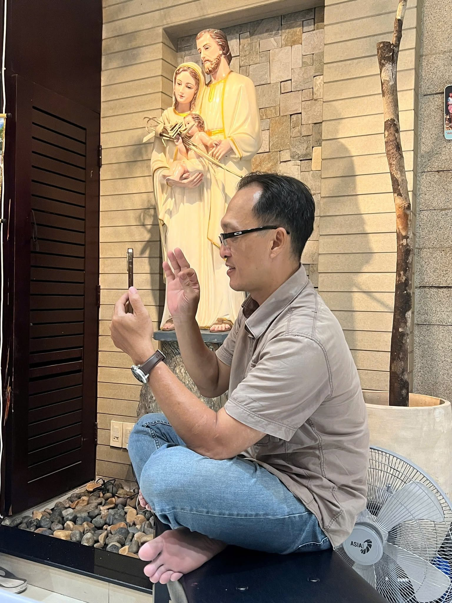

Gửi anh Tấn,
Nhân dịp 20/11 ngày nhà Giáo Việt Nam, em muốn gửi anh đôi lời. Em chỉ vừa mới tham gia vào Ca Đoàn Giới Trẻ được hơn một năm thôi nhưng mà em đã được học hỏi từ anh rất nhiều thứ. Từ cách hát với cách truyền đạt cảm xúc trong bài hát, cách anh dẫn dắt các bạn trong Ca Đoàn, cách anh quan tâm đến từng thành viên trong Ca Đoàn và đặc biệt là cách anh truyền cảm hứng cho các bạn trẻ. Em rất biết ơn anh vì những điều đó. Em còn học được từ anh các kỹ năng xử lý một bài hát khi đàn như thế nào và gần đây nhất là được anh dẫn dắt trong lớp học chỉ huy Ca Đoàn. Em cảm thấy rất may mắn khi được học hỏi từ anh và em hy vọng sẽ tiếp tục được học hỏi từ anh trong tương lai.
Nhân dịp ngày Nhà Giáo Việt Nam thì đối với em một chữ cũng là thầy, nửa chữ cũng là nửa thầy mà anh thì quá trời chữ cho em, nên anh "rất rất thầy" đối với em. Em chúc anh luôn mạnh khỏe, hạnh phúc và thành công trong cuộc sống. Chúc anh luôn là một người thầy tuyệt vời và truyền cảm hứng cho các bạn trẻ. Em cũng chúc anh luôn giữ được niềm đam mê và nhiệt huyết trong công việc dẫn dắt Ca Đoàn và tiếp tục truyền cảm hứng cho nhiều bạn trẻ hơn.

Tái bút,
Tiến Luân